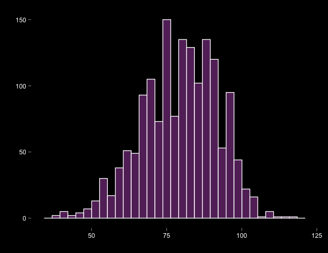
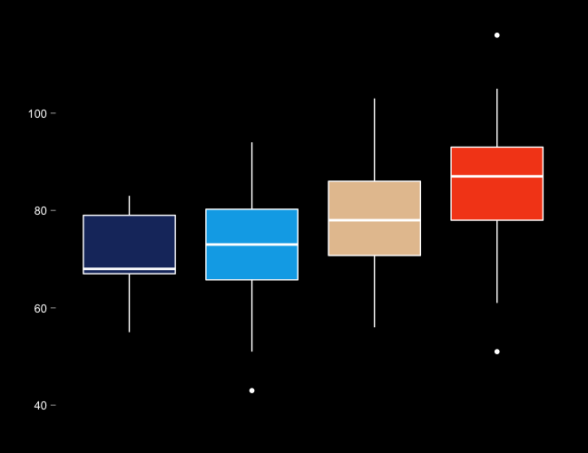

Exploratory Data Analysis (EDA)
using R
Christopher David Desjardins
Examine integrity of data
Check for problems
Explore and identify relationships between variables
Explore the feasibility of the research questions
Identify data needs
Identify what is important and worth pursuing
Make the client :) or :(
## Install dplyr, ggplot2, and shiny
install.packages("dplyr")
install.packages("ggplot2")
install.packages("shiny")
## Load the libraries
library("dplyr")
library("ggplot2")
library("shiny")
We're going to explore the Lahman data set
Lots of different data sets at the team and player level
We'll explore the Teams data set
No, I won't teach you baseball
If you want to follow along
install.packages("Lahman")
## wait and wait; these are large dbs
library("Lahman")
What are the best predictors of wins?
What should we do first?
How might we proceed?
Attempt to understand the structure of the data
names(Teams)
[1] "yearID" "lgID" "teamID" "franchID" "divID" "Rank" "G" "Ghome" "W"
[10] "L" "DivWin" "WCWin" "LgWin" "WSWin" "R" "AB" "H" "X2B"
[19] "X3B" "HR" "BB" "SO" "SB" "CS" "HBP" "SF" "RA"
[28] "ER" "ERA" "CG" "SHO" "SV" "IPouts" "HA" "HRA" "BBA"
[37] "SOA" "E" "DP" "FP" "name" "park" "attendance" "BPF" "PPF"
[46] "teamIDBR" "teamIDlahman45" "teamIDretro"
str(Teams)
'data.frame': 2775 obs. of 48 variables:
$ yearID : int 1871 1871 1871 1871 1871 1871 1871 1871 1871 1872 ...
$ lgID : Factor w/ 7 levels "AA","AL","FL",..: 4 4 4 4 4 4 4 4 4 4 ...
$ teamID : Factor w/ 149 levels "ALT","ANA","ARI",..: 24 31 39 56 90 97 111 136 142 8 ...
$ franchID : Factor w/ 120 levels "ALT","ANA","ARI",..: 13 36 25 56 70 85 91 109 77 9 ...
...
$ teamIDBR : chr "BOS" "CHI" "CLE" "KEK" ...
$ teamIDlahman45: chr "BS1" "CH1" "CL1" "FW1" ...
$ teamIDretro : chr "BS1" "CH1" "CL1" "FW1" ...
Five stat summary
| |
Min |
Q1 |
Med |
Mean |
Q3 |
Max |
| W |
37 |
71 |
80 |
79.4035532994924 |
89 |
116 |
| R |
329 |
639 |
699.5 |
699.745558375635 |
762.25 |
1009 |
| AB |
3493 |
5410 |
5498 |
5420.32550761421 |
5566 |
5781 |
| H |
797 |
1349.75 |
1411 |
1403.91941624365 |
1476 |
1684 |
| X2B |
119 |
215 |
249 |
249.119923857868 |
281 |
376 |
| X3B |
11 |
27 |
34 |
34.6414974619289 |
41 |
79 |
| HR |
32 |
113 |
140 |
142.058375634518 |
167 |
264 |
| BB |
275 |
474 |
521 |
523.487944162437 |
572 |
775 |
| SO |
379 |
816 |
925 |
931.015228426396 |
1054 |
1535 |
| SB |
13 |
65 |
91 |
95.3362944162437 |
122 |
341 |
If the data look sensible (i.e. there aren't any obvious data integrity issues)
Then what?
Explore bivariate associations
| Predictor |
Wins |
| RA |
-0.616065865960237 |
| ERA |
-0.611445802765869 |
| ER |
-0.59861680447287 |
| HA |
-0.512781920911115 |
| BBA |
-0.444945137909955 |
| BB |
0.401595484670558 |
| SHO |
0.465124381461136 |
| Attendance |
0.4764013801237 |
| R |
0.524785625913186 |
| SV |
0.655956165173875 |
Marginal plot of Wins

Box and whisker plot: Wins vs. Attendance

Lots of other techniques
k-means clustering
facet plots
added-variable plot
factor analysis
Up next: Inference?
Train, Test